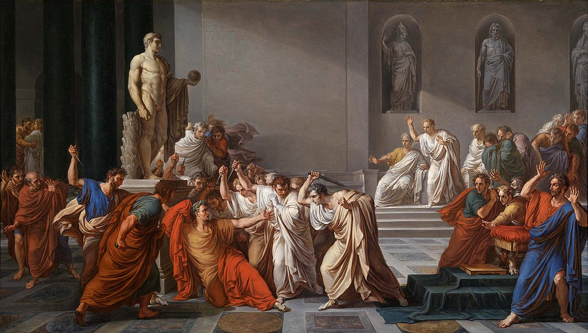

L’héritage des démocraties antiques sur nos démocraties actuelles
La démocratie française d'aujourd'hui s'est construite sur de nombreux changements et adaptation, notamment après la révolution française qui va placer beaucoup de repère essentiels à la République d’aujourd’hui, comme la DDHC, la Déclaration des Droits de l’Homme et du Citoyen, encore en application aujourd’hui. Cependant, la démocratie ne remonte et ne se base pas seulement à la révolution de 1789, mais aussi à des sources antiques, notamment à Athènes, et dans la Rome Antique.
Le mot démocratie vient directement du grec ancien δημοκρατία / dēmokratía, composé de δῆμος / dêmos, le peuple, et de kratein, commander. La démocratie désigne donc au départ un régime ou tous les citoyens participent à la vie publique de la cité et aux décisions publiques, c’est donc un gouvernement dans lequel la souveraineté émane du peuple. Aujourd'hui, dans notre démocratie, le respect des libertés publiques est au cœur même de son fonctionnement. Nous avons hérité de beaucoup de principes de ces démocraties antiques, c'est-à-dire de pratiques qui ont traversé le temps et sont venues influencer la démocratie française en s’inscrivant dans sa constitution. Cependant, ces démocraties remontent à loin, ne fonctionnaient pas toujours sur le même principe et n'était pas axée vers les mêmes valeurs, on retrouve donc des différences majeures entre les démocraties antiques et la nôtre.
Nous pourrons donc nous demander quel est l’héritage des démocraties antiques sur notre démocratie contemporaine en France, et en quoi se différencie-t-elle ? Nous étudierons tout d’abord la mise en place de systèmes démocratiques, puis nous verrons la citoyenneté et son évolution, ensuite nous nous pencherons sur le système politique, et enfin nous analyserons la chute de ces démocraties.
Nous avons choisi de faire notre projet sur les démocraties antique car...
Sommaire
- I/ La mise en place de systèmes démocratiques
- A - La naissance des régimes démocratiques
- 1. Athènes, la création progressive d’un régime démocratique
- 2. Rome, la formation brusque d’un système démocratique et la chute d’une monarchie
- 3. La Révolution française
- B - Le maintien des régimes démocratiques antiques
- II/ La citoyenneté
- III/ Le système politique
- IV/ La fin d'une démocratie
I/ La mise en place de systèmes démocratiques
A - La naissance des régimes démocratiques
1. Athènes, la création progressive d’un régime démocratique
Les bases de la démocratie athénienne ont vu le jour vers le VI siècle avant J.-C. La cause première de la mise en place d’un régime démocratique à Athènes est due à une double crise économique et politique.
A leur tour, les bourgeois qui les achètent les utilisent comme main d’œuvre gratuite pour toutes sortes de projets et travaux manuels, ce qui empiète alors sur le marché des petits artisans indépendants.
D’une part, avec le développement de la cité athénienne, de nouvelles terres sont colonisées. Les agriculteurs athéniens, peu compétitifs, éprouvent alors des difficultés à vendre toutes leurs récoltes et se retrouvent obligés de se vendre eux-mêmes comme esclaves. Il en résulte alors un nombre de chômeurs qui croît de manière exponentielle, générant un fort sentiment de mécontentement des masses face à la minorité des familles riches qui dominent la cité.
Alors qu’Athènes est en pleine crise politique et sociale, Solon est nommé comme Archonte de -594 à -593. Il est considéré par beaucoup comme le père de la démocratie. Il va donc supprimer l’esclavage pour dette, qui était l’une des causes principales de la crise athénienne, et instaure un système de classes sociales censitaires : on dénombre alors quatre classes sociales : les aristocrates (qui sont constitués des familles les plus riches de la ville), les cultivateurs (ceux qui cultivent la terre), la classe populaire (ceux qui vivent du commerce ou de l’artisanat) et les esclaves (qui sont considérés comme biens plutôt que comme des humains).
En -508, Clisthène, dans le but de gagner du soutien politique, va concéder au peuple de lui permettre de participer à la fois aux décisions, mais aussi aux fonctions politiques, tant qu’ils sont citoyens. Cette réforme va alors totalement bouleverser le système, où les anciennes structures politiques fondées sur la richesse personnelle vont s’effondrer. La boulé (lieu où les lois étaient établies dans les cités grecques) augmente son effectif à 500 membres.
Pour finir, en -451, Périclès créa une indemnité journalière pour les citoyens les plus pauvres et résidant loin de la ville, afin qu’ils puissent quand même participer à la vie politique.
A Athènes, la mise en place du système démocratique a pris donc plus de 150 ans avant d’aboutir à sa forme finale, qui durera jusqu’en -322, avec l’invasion d’Athènes par la Macédonie.
2. Rome, la formation brusque d’un système démocratique et la chute d’une monarchie
Depuis -616, les Tarquins ont régné sur Rome. Les archives relatant de la chute de la dynastie des Tarquins sont peu précises et parfois contradictoires, mais toutes s’accordent sur le fait qu’en -509, Tarquin le superbe est définitivement chassé de Rome. La théorie la plus répandue, également rapportée par Tite-Live, est celle selon laquelle la chute de la dynastie des Tarquins est liée au viol de Lucrèce par le fils de Tarquin le superbe, Sextus Tarquin. Elle était l’épouse de Tarquin Collatinus, un membre d’une famille de branche de la famille Tarquin. Cet évènement a directement mis le feu aux poudres, et une rébellion est déclenchée peu après.
Tarquin le superbe était déjà très haï par toute la population de Rome à cause de sa cruauté et de son caractère violent, mais aussi à cause de sa corruption et de toutes sortes d’abus divers, comme en ignorant le Sénat et en instaurant une tyrannie. Néanmoins, personne ne pouvait se révolter sous peine de fortes répressions.
Ainsi, Lucius Junius Brutus, le neveu de Tarquin le Superbe, et Tarquin Collatinus, dont la femme s’était suicidée par honte, étant eux même des membres importants de la famille Tarquin, n’ont eu que peu de difficultés à rallier les oligarques de Rome (les personnages puissant et importants de la dynastie) pour destituer et chasser le roi.
Le roi et sa famille ont fui Rome et se sont réfugiés en Étrurie. Sextus Tarquin meurt peu après assassiné à Gabies. Une fois la rébellion terminée, Junius Brutus instaure la première république romaine en -509.
3. La Révolution française
B - Le maintien des régimes démocratiques antiques
1. Des bases sociétales différentes
Fonctionnement de la démocratie athénienne
Source : Manuel d'Histoire 2nde, Nathan, 2016
Source : Manuel d'Histoire 2nde, Nathan, 2016
La démocratie athénienne repose sur un système de citoyenneté. Néanmoins, il y a de nombreuses restrictions pour pouvoir être citoyen. Tout d’abord, les femmes, considérés comme des éternels enfants, les esclaves, considérés comme des biens matériels, ainsi que la majorité des métèques (les étrangers, aussi appelés barbares), ne sont pas considérés comme des citoyens. Seuls quelques métèques qui ont établis de grands faits militaires pour la cité peuvent recevoir, à tire exceptionnel, le titre de citoyen. En dehors de ce cas exceptionnel, la voie normale pour être reconnu citoyen, après la réforme de Périclès en -451, est d’être un homme issu d’un père citoyen et d’une mère fille de citoyen, alors qu’avant, avoir seul un père citoyen suffisait.
A l’inverse, dans les débuts de la démocratie romaine, les grandes familles qui s’étaient révoltées contre Tarquin, les gentes, seront les principaux dirigeants de la république. Seuls les chefs de ces familles, les patres, forment l’assemblée des doyens et ont la plus grande autorité, dominant ainsi la politique et ayant autorité sur le reste de la population, la plèbe.
Néanmoins, avec de nombreux conflits internes (mutineries et trahisons dans l’armée) et externes (guerres), les tribuns de la plèbe (magistrats élus pour un an et représentant la plèbe) gagnent en influence et en -471, la plèbe devient indépendante des patriciens.
2. Des institutions politiques similaires
A Athènes, il existe trois institutions majeures, dont la principale est l’ecclésia. L’ecclésia est l’assemblée du peuple, où, trois ou quatre fois par mois, tous les citoyens se rassemblent sur la Pnyx, près de l’acropole. Les citoyens votent alors les lois à main levée ; chaque citoyen peut proposer une loi. D’un autre côté, l’ecclésia tire au sort les membres de la boulée et de l’héliée, mais aussi élit les 10 magistrats principaux, les stratèges, qui contrôlent et commandent l’armée. La boulée, aussi appelée le conseil des cinq cents, siège à l’agora et gère les événements de la cité tout en contrôlant les magistrats, et notamment les dix stratèges. L’héliée, quant à elle, est une sorte de tribunal, qui distribue les récompenses et les punitions aux citoyens.
A Rome, il existe également une assemblée de citoyens, les comices, qui sont élus par les citoyens. Ces derniers élisent alors les magistrats (les deux consuls pour deux ans, les préteurs, les édiles et les questeurs pour un an). Ces derniers gouvernent alors la société sous la supervision des sénateurs. Néanmoins, à la différence d’Athènes, les citoyens ont en réalité un pouvoir factice. Alors qu’Athènes se targue d’une réelle démocratie, où chaque citoyen peut avoir une influence réelle sur la cité, à Rome, les sénateurs, étant élus à vie, détiennent le véritable pouvoir et dirigent tout Rome. On peut donc dire que Rome est plus une oligarchie qu’une démocratie, bien qu’elle se nomme république, alors qu’Athènes ressemble plus au système démocratique actuel.
II/ La citoyenneté
A - Etre citoyen
B - Les droits du citoyen
C - Les devoirs du citoyen
III/ Le système politique
Nous avons donc vu comment les démocraties antiques se sont mises en place au fil du temps. Cependant, la démocratie s'est arrêtée en -322 pour Athènes, et en -27, qui va marquer l'arrivée d’Auguste et le l’Empire Romain jusqu'en 476. Malgré les siècles qui nous séparent de ces démocraties, on retrouve un héritage certain de leurs systèmes politiques bien qu’ils puissent différer sur quelques-uns de ses aspects. Ainsi, nous allons voir comment ce système s’organise sous les différentes démocraties étudiées, notamment les institutions qu’on y retrouve et le principe de leurs élections.
A - Les institutions
Le second principe d’une démocratie est la séparation des pouvoirs entre différentes institutions politiques. Ainsi, en Grèce, celle-ci est effectuée entre l’Ekklesia, l’Héliée, la Boulé et les Magistrats. Nous allons nous concentrer surtout sur le principe de l'Ekklésia (l’assemblée) et de l'Héliée pour comprendre d'où vient cette démocratie. A Athènes, l’Ekklesia est l’assemblée des citoyens qui se réunissent sur le Pnyx, une colline où les lois sont votées. L'entièreté des citoyens athéniens en faisait partie, soit environ 40000 personnes, et pour qu’une loi soit adoptée, il fallait que la majorité soit d’accord, sur le principe d’un vote à main levée. C’est donc bien le “peuple”, réduit à une petite partie, les citoyens, qui dirigent la vie de la cité, et permettent donc une égalité entre tous les citoyens. Ils pouvaient aussi s’exprimer à propos de n'importe quel sujet, et proposer une motion. Par exemple, l'ostracisme, le bannissement d’une personne, est voté sur un morceau de céramique ( l'ostracon, qui donne nom à l’ostracisme) et c’est la majorité qui l’emportait. Les héliaste et bouleutes étaient tirés au sort pour une durée d’un an pendant lequel ils devaient s’investir dans la vie publique encore plus qu’un simple citoyen en présidant des assemblées, et en examinant ce qui est bon pour la cité ou non.
La démocratie athénienne s’est donc bâtie donc sur l'égalité entre les citoyens, avec le vote à main levée, et le tirage au sort. De même, lors d’un procès par exemple, le temps de parole est comptabilisé avec une clepsydre, pour que tout le monde ait le même temps de parole. C’est l'Héliée, le tribunal populaire qui va rendre la justice. Les héliastes sont 6000 citoyens, tirés au sort, et sont plus ou moins nombreux selon le procès, avec un verdict irrévocable, et directement appliqués. Lors d’un procès, ils débattaient ensemble sur la culpabilité du suspect, puis ensuite sur la peine qu’il fallait éventuellement appliquer.
En France, on retrouve bien un héritage de la démocratie d'Athènes, principalement sur cette répartition des pouvoirs. En revanche, ce principe de démocratie directe est impossible en France, car les citoyens français sont bien plus nombreux que ceux athéniens. De même, les institutions fonctionnent différemment, certaines ont totalement disparu aujourd'hui dans notre démocratie, et par exemple la justice n’est pas liée au pouvoir exercé par les citoyens. Pour le principe de démocratie directe, même si en France le président est élu à la majorité, il faut 500 signatures de maire pour pouvoir se présenter officiellement. Les institutions ne sont pas gérées par des gens tirés au sort, mais élus d'après des listes et les préférences des gens.
Des idées ont étés gardées d'Athènes, avec par exemple le décompte du temps de parole, mais surtout le vote dans des urnes, comme on élit aujourd’hui le président, ou comment cela peut se passer dans un référendum. Cependant c’est bien ce principe de démocratie qui est important, et les libertés qui peuvent en découler. C’est le peuple qui exerce le pouvoir via des représentants qu’elle a choisi, et ainsi faire représenter l’opinion commune sur les représentants qui s’occupent de voter les lois, et d’influencer sur le futur du pays, que ce soit au niveau national ou au niveau des relations internationales.
Du côté de la Rome Antique, nous allons nous intéresser au Sénat, qui a eu une répercussion évidente sur notre Sénat actuel. Le mot Sénat vient du terme latin senex, c'est-à-dire le vieillard. A Rome, cette assemblée était composée des chefs des grandes familles romaines (les pères, patres), et des anciens magistrats, tous élus à vie, et étaient plus ou moins 300. Le Sénat était la seule institution politique à être éternelle et continue (comparé au consulat, qui par exemple, expirait au terme d’un mandat annuel). Le Sénat détenait “l’auctoritas", c’est à dire plus ou moins “autorité”: il est bâti sur la même racine, “aug-” le verbe augere, “augmenter” ou que l'augurium, “l'augure”. Il y avait une véritable dimension religieuse avec le Sénat, car on trouvait un fort fondement religieux, l’augure étant celui qui donne sens aux signes divins. Cette “auctoritas patrum” était aussi le souvenir du pouvoir auspicial des “Patres”, seuls capables d'interpréter les signes divins qui influaient sur leurs décisions ce qui créait un véritable lien avec la religion. Le Sénat était donc une institution religieuse et politique, les séances se passaient dans un espace délimité “templum”, et étaient précédés d’un sacrifice pour les dieux. Elles se déroulaient dans un hémicycle, une construction en demi-cercle autour d’une tribune. Les lois votées par les assemblées étaient confirmées par les sénateurs grâce à l'"auctoritas''.
Les fonctions sénatoriales n’étaient pas vraiment définies, mais on sait aujourd’hui que les sénateurs jouissaient depuis l'époque royale d'une supériorité sur tous les autres organes politiques. Malgré le fait, qu'en théorie, le Sénat ne disposait que de pouvoir limité, il jouait un rôle religieux, législatif, financier et de politique extérieure important. Il agissait aussi comme un conseil d'Etat, sur les affaires de la vie quotidienne.
Cette institution a été reprise en France, mais avec cependant certaines différences assez importantes mais avec des ressemblances aussi, on le voit notamment avec un nom identique. Le Sénat en France a aussi cette notion de permanence, car il ne peut être dissous contrairement à l'Assemblée Nationale. Mais les sénateurs ne sont pas élus à vie, ils sont 348 sénateurs élus pour six ans au suffrage universel indirect et se renouvellent par moitié tous les trois ans. Les sénateurs sont élus par un collège d’environ 160 000 grands électeurs (qui sont obligés de participer au vote). Ce collège est composé des députés, conseillers en tout genre et des délégués des conseils municipaux. Le Sénat contrairement à la Rome Antique ne dispose d’aucune dimension religieuse, vu que la séparation de l’Eglise et de l’Etat est effective en 1905.
Aujourd’hui, le Sénat vote la loi, contrôle l’action du gouvernement et évalue les politiques publiques. Ses pouvoirs sont fixés par la Constitution. Le but du Sénat est d’examiner les lois, de les valider, les projets ou propositions de loi sont donc examinés successivement par les deux assemblées jusqu’à ce que le texte soit identique. Après deux lectures par les deux chambres, la loi peut être acceptée ou non, et si elle ne l’est pas, les présidents des deux assemblées agissant conjointement et peuvent convoquer une commission mixte paritaire (qui est d’un même nombre de députés et de sénateurs) et doivent trouver un compromis entre les divergences. Le Sénat contrôle donc en partie la politique du gouvernement.
On peut donc voir un réel héritage de Rome, notamment sur l’étendue des pouvoirs du Sénat, cependant à Rome les pouvoirs du Sénat ne sont pas clairement définis, contrairement à notre démocratie où tout est inscrit officiellement. Par exemple, le Parlement autorise la déclaration de guerre, la prolongation au-delà de douze jours de l’état de siège et d’urgence. Pour le lieu, le Sénat se trouve au palais du Luxembourg, et les séances se passent dans un hémicycle, un héritage de Rome. Il y a donc contrairement à la Rome Antique des élections, pas de religions et des délimitations précises du rôle du Sénat et de ses pouvoirs, et une chambre bicamérale. Cependant, le principe reste plus ou moins le même, avec des sénateurs qui influent sur la vie publique et les lois.
B - Les élections
A Athènes, on pouvait observer une façon très particulière d’élire les politiciens. En effet, sans prendre en compte l’Ekklesia (où aucun n’est élu), 6500 sur 6520 politiciens étaient tirés au sort par l’Ekklesia parmi les citoyens de plus de 30 ans. Ainsi était assuré une participation équitable à la gouvernance de la cité car tout le monde pouvait devenir héliaste (appartenant à l’Héliée) ou bouleute (appartenant à la Boulée). Les 20 restants sont des Magistrats (10 archontes et 10 stratèges) auxquels sont demandés des tâches plus complexes demandant de plus amples connaissances. Le régime politique athénien était une démocratie directe, c’est-à-dire que les citoyens pouvaient participer directement aux décisions d’ordre public. En effet, ils appartenaient tous à l’Ecclesia, ou assemblée du peuple. Mais cette intense intégration citoyenne ne se faisait pas sans frais. La participation à l’Ecclesia étant obligatoire, l’Etat versait une indemnité aux citoyens. Cette indemnité, nommée « misthos », compensait la perte d’une journée de travail et permettait ainsi aux citoyens de participer à la vie publique.
En France, on retrouve aussi un rôle qui est attribué aléatoirement parmi les citoyens de plus de 23 ans : celui de juré d’assise. Ce jury est un citoyen tiré au sort sur les listes électorales pour siéger à la cour d'assises. Il participe aux côtés des magistrats professionnels au procès des personnes accusées de crime. Le juriste exerce pleinement la fonction de juge. Si un citoyen est retenu pour siéger lors d'une session d'assises, il se doit d’y assister. Cependant, il y a beaucoup moins de tirage au sort qu'à Athènes, et les citoyens accèdent moins à de hautes responsabilités. En France, on constate donc qu’il y a moins de tirage au sort, de pouvoir des citoyens et de misthos, cependant ceux-ci jouent tout de même un rôle, notamment avec celui de juré.
Du côté de Rome, on pouvait retrouver aussi un système très différent du système français actuel. En effet, les politiciens évoluaient selon la “Carrière des Honneurs” ou “Cursus Honorum”. Il était constitué d’une série de magistratures que devait exercer un Romain dans le cadre des institutions, avant de parvenir au consulat. Ce sont la questure, l'édilité (patricienne ou plébéienne), le tribunal de la plèbe (pour les plébéiens), la prêture et enfin le consulat. Cet ordre, obligatoire, permettait de gagner des compétences et d’avoir pour magistrats suprêmes des hommes mûrs et expérimentés. A Rome, tous les citoyens romains appartiennent à une comice (en fonction de son lieu de résidence, de sa fortune, de sa position…). Les comices sont dans la République romaine des assemblées qui expriment la volonté du peuple romain dans les domaines électoraux, législatifs et judiciaires. Ces assemblées sont au nombre de trois, ou quatre si l'on comprend le concile plébéien. Elles rassemblent toutes les mêmes citoyens, mais diffèrent par leurs compositions, leurs compétences et leurs fonctionnements.
| Assemblée | Elections | Législation | Judiciaire |
|---|---|---|---|
| Comices centuriates | Consul, préteurs, censeurs | Lois, déclaration de guerre, confirmation du pouvoir des censeurs | Crimes d’État passibles de mort |
| Comices tributes | Édiles curules, questeurs, tribuns militaires, magistrats spéciaux | Lois | Crimes d’État passibles d’amendes |
| Concile plébéien | Tribuns et édiles de la plèbe | Plébiscites | Abus de pouvoir |
Fonction des comices du peuple romain
En France, il n’existe aucun équivalent au Cursus Honorum. En effet, les institutions sont toutes reliées entre elles et partent des citoyens. Ainsi, ceux-ci élisent le président, les grands électeurs et les députés de l’Assemblée Nationale. Suite à quoi les grands électeurs élisent les membres du Sénat (sénateurs) et le président nomme les membres de son gouvernement. Enfin, 3 membres du Sénat, de l’Assemblée Nationale et du gouvernement sont désignés afin de constituer le Conseil Constitutionnel. La grande majorité des citoyens ont une participation moins marquée dans la vie politique. En effet, bien qu’ils soient à la base du système d’élection, ils n’ont pour la plupart aucun poids dans le système politique français. Ils ne peuvent décider des lois (sauf en cas de référendum), ne rendent pas de jugements.
On retrouve cependant certaines ressemblances entre Rome et la France, comme on peut le voir avec le fait qu’un “dictateur” pouvait être nommé en cas de crise et avec une prise des pleins pouvoirs. Cette situation ressemble beaucoup à l’état d’urgence qui peut être déclaré en France en cas de problème, on a pu le voir avec l'état d’urgence sanitaire mis en place avec la crise sanitaire liée au Covid, qui peut s’apparenter à une prise des pleins pouvoirs pour certains. Les citoyens ont tout de même une participation qui influence la vie politique, même si le rôle joué est plus minime, le vote à quand même une importance capitale sur les dirigeants et le pouvoir en place. En France, on peut donc constater certaines différences avec la Rome Antique, notamment sur le “cursus honorum”, ou une place active des citoyens dans la vie politique. Cependant, des ressemblances se constatent sur la prise des pleins pouvoir, ou l'élection des dirigeants.
IV/ La fin d'une démocratie
A - La fin d'une démocratie antique : la guerre du Péloponnèse et la chute d'Athènes
La Grèce antique est en plein âge d’or au Vème siècle avant J.-C. Athènes est alors la cité la plus puissante et la plus rayonnante de la Grèce, de par sa culture et son économie. Elle est de plus à la tête de la ligue de Délos, ligue rassemblant des cités grecques, notamment pour lesquelles Athènes offre sa protection militaire en échange d’un impôt, pour résister face à la menace Perse. Cependant cette alliance devient progressivement un “empire athénien”, car les cités perdent peu à peu leur indépendance et la flotte qui devait les protéger est utilisée pour les réprimer s' ils voulaient sortir de cet impérialisme athénien.
Cependant la cité de Sparte refuse de faire partie de cette alliance car tout l’oppose à Athènes, particulièrement son système politique : Sparte a un système complexe puisqu’elle combine quatres régimes différents : la démocratie, représentée par l’Ekklesia, une oligarchie, une tyrannie et enfin une dirachie, incarnée par deux rois qui ont pouvoir notamment religieux et militaire, ce qui leur donne beaucoup d’influence. De plus, Sparte a les capacités de faire de la concurrence à Athènes sur le plan économique mais surtout militaire car l’armée spartiate est la plus renommée de la Grèce antique.
Sparte fonde la ligue du Péloponnèse en rassemblant des cités de la péninsule éponyme pour faire contrepoids à la ligue de Délos. Parmi ces cités nous retrouvons Corinthe, Thèbes, Delphes, Olympie, …
Dès la fin des guerres médiques (guerre opposant les Grecs aux Perses), les relations entre Athènes et Sparte se dégradent, et après plusieurs incidents, les deux ligues rivales se déclarent la guerre en -431.
La stratégie est très différente d’un camp à l’autre : Athènes, puis puissants sur la mer et plus riches tentent une guerre d’usure alors que Sparte, possédant la meilleure armée terrestre à tout intérêt à faire une guerre rangée et rapide. Elle va donc régulièrement effectuer des raids en Attique pour piller et détruire les récoltes athéniennes dans le but de faire sortir les troupes de ces derniers hors de la cité pour une bataille rangée, mais cette stratégie échouera car la cité athénienne reste ravitaillée par sa flotte maritime.
La guerre dure jusqu’en -404. Durant cette guerre, beaucoup de retournements ont lieu, parmi lesquels l’épidémie de la peste d’Athènes, l’alliance entre Sparte et la Perse qui l’aide à se construire une flotte pouvant rivaliser avec celle d’Athènes, la mort de Périclès bousculant la vie politique d’Athènes, etc.
La guerre se termine donc avec la reddition d’Athènes et de la ligue de Délos, qui est dissoute : la cité reste en place mais le régime est changé pour un régime non démocratique, appelé la “Tyrannie des Trente”. Comme son nom l’indique, c’est une oligarchie menée par trente “tyrans” installés par Sparte. Ces tyrans réduisent considérablement l’accès à la citoyenneté à 3000 personnes au lieu de 40 000, ils contrôlent totalement les institutions, comme la Boulè (toujours existante cependant), ont le soutien de la garnison spartiate, éxécutent des métèques pour s’accaparer leur fortune, etc. Même si ce régime ne dure qu’un an, cette crise marque profondément Athènes et la guerre du Péloponnèse met fin à l’âge d’or de la Grèce antique.
B - Les limites des systèmes démocratiques
Grâce à l’étude de la guerre du Péloponnèse et à d’autres évènements historiques, nous allons mettre en parallèle la chute de démocraties antiques et contemporaines. Nous nous appuierons notamment sur les faits suivants :
- La fin de la démocratie romaine
- La Révolution Française, la Terreur puis l’Empire
- Le nazisme et le régime de Vichy
1. La guerre
Lors de la guerre du Péloponnèse que nous avons étudiée juste précédemment, même si Athènes est considérée comme le berceau de nos démocraties actuelles, elle était à la tête d’un empire. Cela se rapproche beaucoup plus du colonialisme de nos sociétés européennes auparavant. Cependant, nos sociétés ont évolué et la vision des Athéniens est bien différente de la nôtre aujourd’hui, qui est plutôt de propager le régime démocratique à tous et vouloir absolument combattre tous les tyrans.
La mise en place de la "Tyrannie des Trente” peut être mise en parallèle avec celle du régime de Vichy en juillet 1940 : ces deux changements de régime interviennent suite à la perte d’une guerre et instaurent un pouvoir très fort qui donne l’illusion d'une démocratie et qui collabore avec les vainqueurs de la guerre (dans le premier cas Sparte et dans le second les Nazis). Les deux régimes désignent aussi des coupables, des boucs émissaires (métèques et juifs), donnant lieu à de nombreuses différence entre les deux cependant est que la population athénienne était beaucoup plus hostile à la Tyrannie des Trente, notamment parce que la vie politique a plus d’influence dans une cité peuplée que dans une France encore très paysanne.
2. La dérive autoritaire du dirigeant
On peut définir la fin de la démocratie romaine de deux façons différentes : officiellement, c’est le couronnement d’Octave en -27, le neveu de Jules César, qui devient ainsi l’empereur Auguste, suite à la mort de Jules César, assassiné aux Ides de Mars (15 mars) de l’an -44. Cependant, Jules César est nommé dictateur à vie par le sénat en -44 , ce qui est par définition anti-démocratique. Cette dérive autoritaire a lieu en fait depuis que César a franchi le Rubicon (représentant les limites de la ville de Rome) avec les armées, bravant ainsi l’interdiction du Sénat qui l'empêchait de revenir de Gaule. L’assassinat de Jules César peut être donc vu comme un moyen de “sauver” la République, mais il instaure en même temps un climat de désordre dans la République en lui enlevant son dirigeant. Ce climat sera favorable à Marc-Antoine et Octave, qui tous deux prétendent au pouvoir. C’est finalement Octave qui devient le premier empereur romain à l’issue d’une guerre entre ces deux derniers.

Ce changement de régime possède beaucoup de points communs avec l’issue de la Révolution française : dans cet exemple, c’est le parti des Montagnards, mené par Robespierre qui prend de plus en plus d’influence et finit par contrôler la toute jeune République via le Comité de Salut Public . Ils instaurent pour cela un climat de peur sur toute la société pendant ce qui sera appelé la Terreur. Cette dérive autoritaire provoque naturellement des réactions, qui aboutissent à la mort de Robespierre le 10 thermidor de l’an II, soit le 28 juillet 1794. Le Directoire est mis en place, mais le système resté fragile favorise l'arrivée du Général Bonaparte au pouvoir. Cette comparaison est d’autant plus intéressante car Napoléon veut instaurer un Empire en s’inspirant de l’Empire romain.
Nous l’avons constaté, un facteur essentiel à la chute d’un régime démocratique est l’instabilité du pays : beaucoup des exemples cités ci-dessus interviennent dans un contexte de guerre entre pays (comme Athènes et à notre époque le régime de Vichy) ou alors que la démocratie n’en est en fait plus réellement une (comme Rome avec Jules César qui devient peu à peu un dictateur ou lors de la Révolution Française, où la France n’avait pas encore d’expérience démocratique et le pouvoir était détenu principalement par les Montagnards). Cela veut dire que si nous voulons aujourd’hui éviter que nos démocraties disparaissent, il faut favoriser la paix, ce que le monde actuel réussit grâce à l’ONU ou à l’Union Européenne par exemple, et rester vigilant que le fait que le dirigeant ne puisse prendre de plus en plus de pouvoir. Ce dernier point est plus difficile ; aujourd’hui, certaines personnes reprochent justement à la constitution de la Vème République de donner trop de pouvoir au Président de la République.
Conclusion
Ainsi, nous avons pu voir qu’entre la démocratie française et celles antiques, on retrouve de nombreux points communs et différences, et ce, dès leur naissance, due à un sentiment général de mécontement, de colère voire de haine envers les élites ou le gouvernement bien que ce sentiment ait différentes causes en fonction du pays étudié.
De plus, chaque démocratie base son fonctionnement sur la notion de citoyenneté, définie par sa façon de l’obtenir, ses droits et ses devoirs. Ceux-ci vont être différents en fonction de la démocratie ciblée et vont se diversifier et s’élargir à partir de l’Antiquité pour arriver à ceux actuels français.
On retrouve aussi dans ces démocraties un partage du pouvoir politique entre différentes institutions dont certaines ont franchi les siècles et ont été transmises au système démocratique français, bien qu’ayant changé de fonctionnement, de composition ou de compétence.
Enfin, les démocraties antiques ont pris fin suite à des événements qui ont rendu le pays extrêmement instable, notamment des guerres civiles ou internationales. Mais ces conflits sont seulement la fin d’un processus d’affaiblissement de la démocratie ou du basculement de celle-ci dans un régime plus autoritaire.